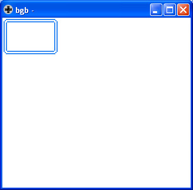

參考資訊：
https://bgb.bircd.org/
https://github.com/mrombout/gbdk_playground
http://gbdk.sourceforge.net/doc/html/book01.html
Tile設定
void set_win_data(UBYTE first_tile, UBYTE nb_tiles, unsigned char *data);
第一個參數是Tile位置(0~255)
第二個參數是需要複製多少個Tile像素(0代表256個)，每個Tile像素是8x8(16 Bytes)
第三個參數是Tile來源位置
Tile指定
void set_win_tiles(UBYTE x, UBYTE y, UBYTE w, UBYTE h, unsigned char *tiles);
第一個參數是x位置
第二個參數是y位置
第三個參數是Tile寬(W)的數量
第四個參數是Tile高(H)的數量
第五個參數是Tile Map，大小必須是WxH，Map描述Tile的索引
main.c
#include <gb/gb.h>
#include <gb/cgb.h>
unsigned char tile[] = {
0x00, 0x00, 0x1f, 0x1f, 0x20, 0x20, 0x4f, 0x4f,
0x50, 0x50, 0x50, 0x50, 0x50, 0x50, 0x50, 0x50,
0x50, 0x50, 0x50, 0x50, 0x50, 0x50, 0x50, 0x50,
0x4f, 0x4f, 0x20, 0x20, 0x1f, 0x1f, 0x00, 0x00,
0x00, 0x00, 0xf8, 0xf8, 0x04, 0x04, 0xf2, 0xf2,
0x0a, 0x0a, 0x0a, 0x0a, 0x0a, 0x0a, 0x0a, 0x0a,
0x0a, 0x0a, 0x0a, 0x0a, 0x0a, 0x0a, 0x0a, 0x0a,
0xf2, 0xf2, 0x04, 0x04, 0xf8, 0xf8, 0x00, 0x00,
0x00, 0x00, 0xff, 0xff, 0x00, 0x00, 0xff, 0xff,
0x00, 0x00, 0x00, 0x00, 0x00, 0x00, 0x00, 0x00,
0x00, 0x00, 0x00, 0x00, 0x00, 0x00, 0x00, 0x00,
0xff, 0xff, 0x00, 0x00, 0xff, 0xff, 0x00, 0x00,
0x50, 0x50, 0x50, 0x50, 0x50, 0x50, 0x50, 0x50,
0x50, 0x50, 0x50, 0x50, 0x50, 0x50, 0x50, 0x50,
0x0a, 0x0a, 0x0a, 0x0a, 0x0a, 0x0a, 0x0a, 0x0a,
0x0a, 0x0a, 0x0a, 0x0a, 0x0a, 0x0a, 0x0a, 0x0a,
0x00, 0x00, 0x00, 0x00, 0x00, 0x00, 0x00, 0x00,
0x00, 0x00, 0x00, 0x00, 0x00, 0x00, 0x00, 0x00
};
unsigned char map[] = {
1, 5, 5, 5, 5, 3,
7, 9, 9, 9, 9, 8,
7, 9, 9, 9, 9, 8,
2, 6, 6, 6, 6, 4,
};
unsigned short palette[] = {RGB_WHITE, RGB_RED, RGB_GREEN, RGB_BLUE};
void main(void)
{
SHOW_BKG;
set_win_data(1, 9, tile);
set_win_tiles(0, 0, 6, 4, map);
set_bkg_palette(0, 1, palette);
SHOW_WIN;
}
完成
